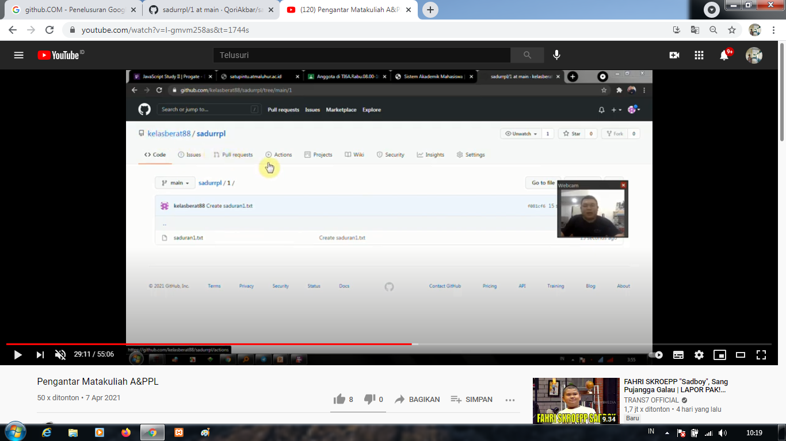

Nim : 201152004P
Nama : Qori Akbar
Kelompok : TI6J
Hasil Saya Menyadur :
1) Ada tugas membuat saduran tiap pertemuan dan ditaruh di github
2) Membuat Kelompok Presentasi untuk UAS
3) perkenalan, penjelasan tata tertib perkuliahan, dan kontrak perkuliahan
4) ada tugas membuat akun github dan membuat repository di github
5) penjelasan cara membuat repository di github
